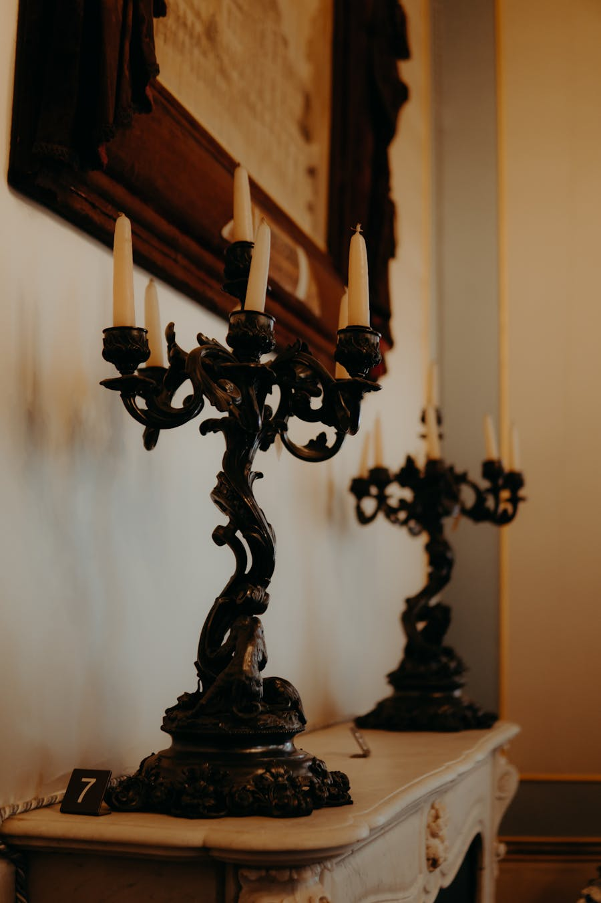
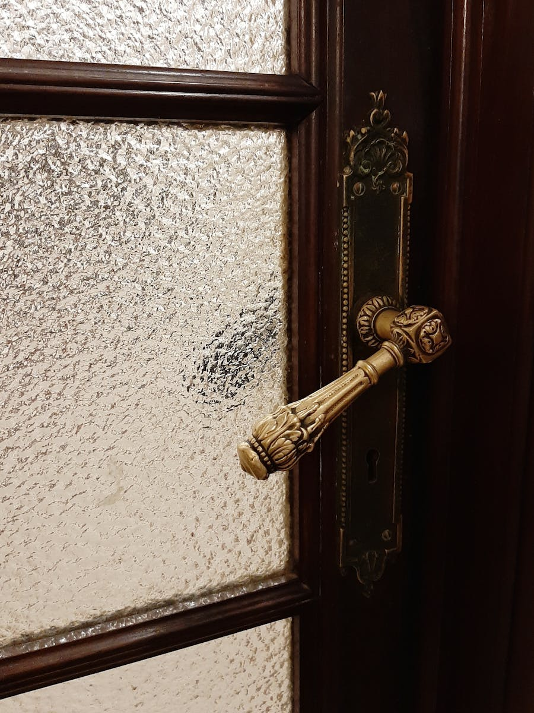

Что такое никелирование
Никелирование — это базовое и при этом самое универсальное гальваническое покрытие. Оно работает в трёх ролях одновременно: даёт сцепление под хром и серебро, защищает основу от коррозии, и само по себе выглядит как полированный технологичный металл.
Гладкое блестящее никелирование идёт на детали машиностроения, которые должны выдерживать атмосферу и слабую агрессию. Полуглянцевое и матовое — для деталей, где блеск был бы помехой. Толщина выбирается под среду: 6–12 мкм для городской атмосферы, 18–30 мкм для морской и промышленной.
Чаще всего никель работает как подслой: на сталь, потом никель 9–18 мкм, потом хром или серебро. Это даёт многослойную систему, в которой каждый слой берёт на себя свою функцию — сцепление, защиту, внешний вид.
Где применяется
Серийное производство
- Подложка под хромирование и серебрение
- Защита деталей машиностроения
- Контактные группы в электротехнике
- Радиоэлектронные компоненты и корпуса
Реставрация и штучные проекты
- Корпуса часов и инструментов
- Никелированная посуда (восстановление)
- Дверные накладки и фурнитура
- Светотехника и арматура
Что мы покрывали этим материалом


Фрагмент портфолио. Полное — на главной.
Как мы делаем никелирование
Обезжиривание щелочное и электрохимическое → активация в кислоте → никелирование в сульфаматной или ватановой ванне → промывка → контроль толщины и адгезии → если нужен последующий слой (хром/серебро) — передача на следующий участок.
Когда будет готово
Партия от 100 деталей — 4–6 рабочих дней. Никелевая подложка под другие покрытия — 2–3 дня.
Точный срок согласуем после получения детали или партии. Срочные работы для индустрии — по индивидуальному графику.
Нужно никелирование?
Опишите задачу — пришлём предварительную оценку в течение рабочего дня.